GammaOS Nano 1.4.2 and 1.4.3 are two big releases centred on the built-in DS player and the dual-screen handhelds, with a new ES-DE theme engine, Syncthing built in, a much more colourful DSi theme and a long list of fixes. This page is a quick, user-facing tour grouped by area, with links to the pages that hold the full details. The screenshots were captured on an RG DS Plus running 1.4.3.
Looking for the previous release? See What's New in 1.4.1.
Themes and the home look
-
A fourth home theme: Custom / ES-DE. Settings > Theme Settings > Home Theme now offers GammaOS XMB, DSi Menu, Minima and Custom / ES-DE, and applies live. See Home Themes.
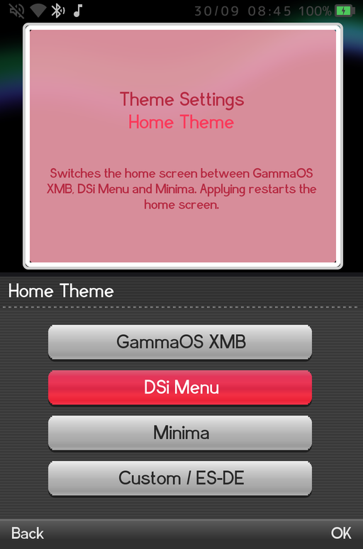
-
ES-DE theme engine. Custom / ES-DE renders real EmulationStation-DE theme sets with their variants, colour schemes and per-game art. The Slate theme comes preinstalled. See ES-DE Themes.
-
ES-DE menu and Theme Downloader. Press Start in the ES-DE home to open UI Settings: pick a theme, variant, colour scheme, font size and aspect ratio, or open Theme Downloader to fetch any theme from the official ES-DE list. Nano Settings takes you to the normal settings. You can also drop ES-DE theme folders into
ES-DE/themeson internal storage.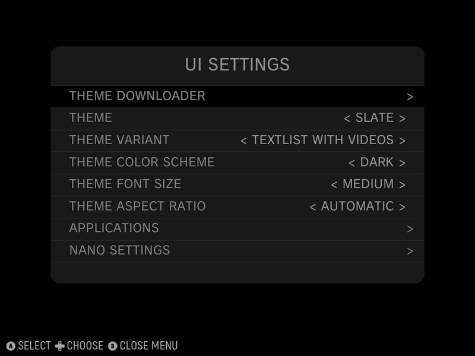
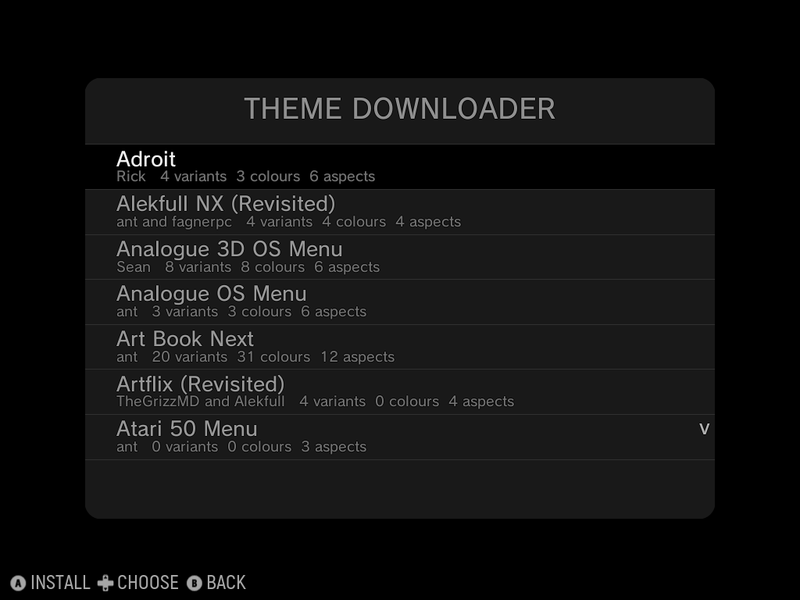
-
Startup Menu. Theme Settings > Startup Menu picks where the home opens at boot: the default, any category, or straight into one game system such as your Nintendo DS list. See Theme Settings.
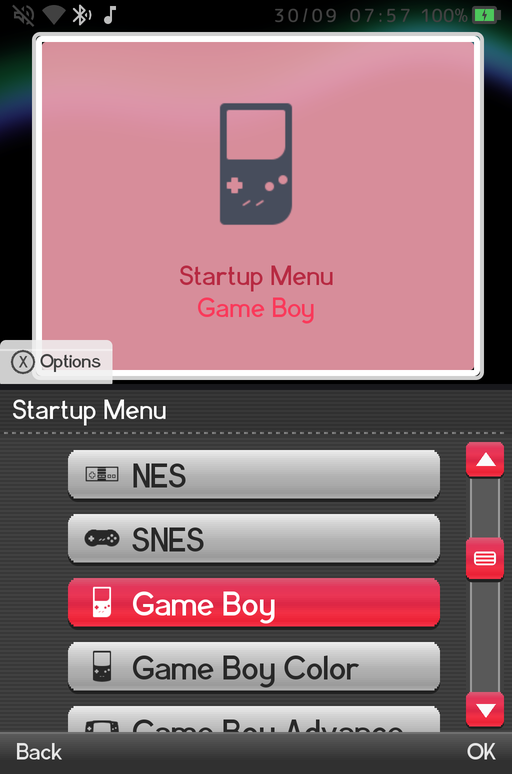
-
Custom accent colour. The Colour setting gains 21 presets and a Custom... entry at the end. It opens a full-screen picker: d-pad left and right for hue, up and down for brightness, L1 / R1 for saturation, A to apply. The colour drives the XMB wave, the Minima accent and the DSi chrome, live.
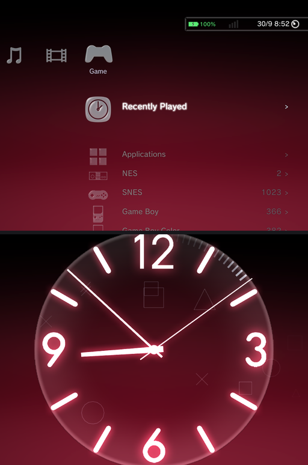
-
DSi top screen follows your colour. Any accent other than Original recolours the DSi top-screen canvas, text, selection frame and scroll bar in its true hue.
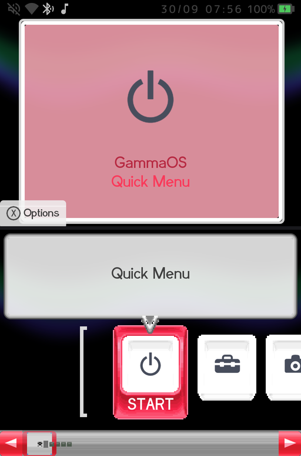
-
DS games show their own icon and title (DSi). DS games without a scraped cover show the icon and name stored in the cartridge (Titles From ROM, on by default). New in 1.4.3, DS Icons On Tiles keeps the cartridge icon on the carousel tile even when box art exists; the box art still shows on the top screen.
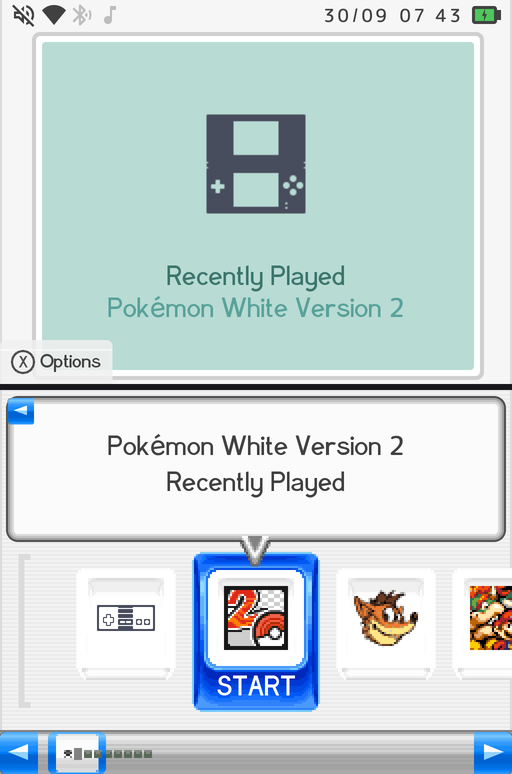
-
DSi Background Effect on both screens. The Wallpaper row in the DSi theme now offers animated effects (Snow, Rain, Confetti, Fireflies, Starfield, Aurora, XMB Wave and more) behind a see-through canvas, name balloon and scroll rail. The DSi keeps its own choice separate from XMB.
-
DSi button legends. X and Y prompts (Options, Sort, Pin, Info) sit in the top-screen corners, DSi style, in light and dark variants. See Navigating.
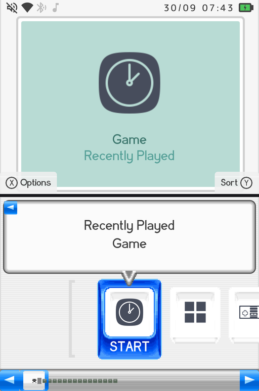
-
DSi launch effect plays to the end. The tile lift, sparkle ring and white wash complete smoothly before the game appears, and the carousel comes back on the game you launched.
- DSi settings as lists, and a faster DSi theme. Game Settings and Theme Settings show as lists in the DSi theme, the scroll bar lands on the last card, and the DSi home holds 60 fps even in power saver mode.
-
Half Resolution for XMB. Half Resolution: Wave and Half Resolution: Clock render just those parts at half size, so weaker GPUs keep a full frame rate while the menu text stays sharp.
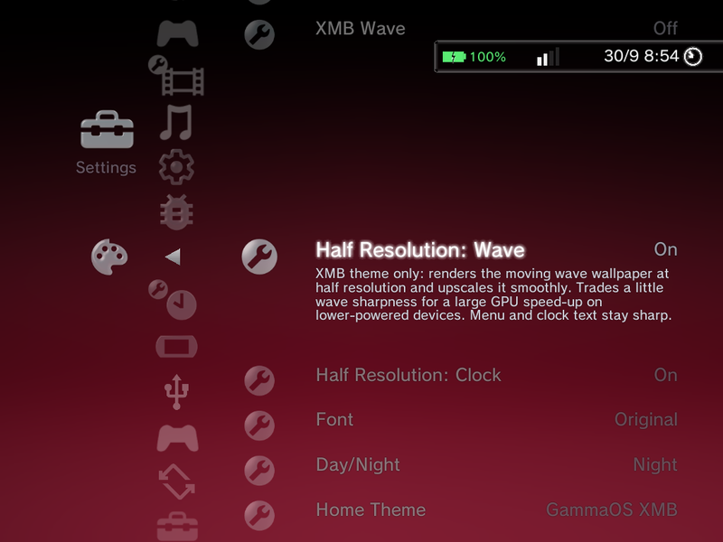
-
Boot Sound, Menu Music and Show Battery Percent. Turn the boot chime off in any theme, the DSi menu music on or off, and show the charge as a number in the DSi and Minima status bars.
- Charging indicator. The battery icon in every theme shows a lightning bolt while charging.
-
New confirmation toast. Setting, sort and pin confirmations appear as a compact corner card, and slot into the XMB clock bar as frosted glass.
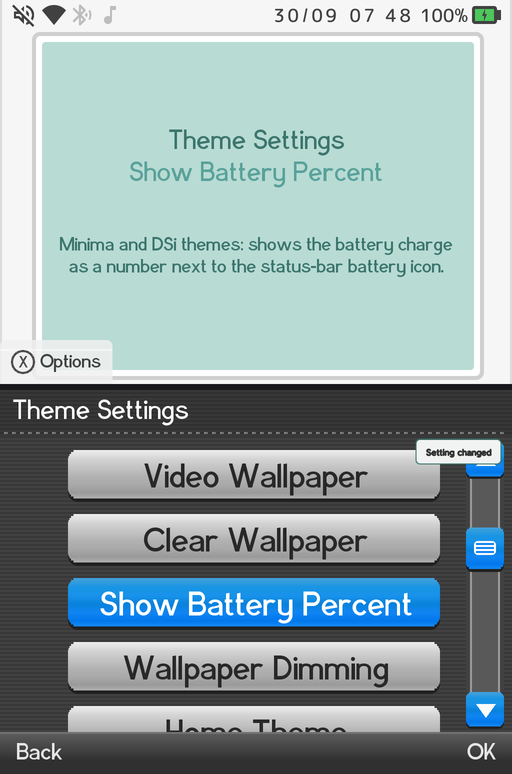
-
Slide clock options. In Settings > Slide Behaviour, Freeze App Under Clock pauses the game while the slide clock is up, and Parallax, Parallax Strength and Parallax Direction replace the old calibration field. See Slide and Rotation.
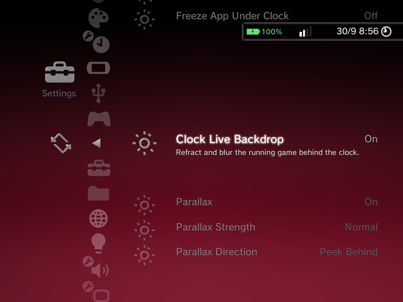
-
Right-to-left languages. Arabic and Hebrew render correctly everywhere, with over 800 translation fixes across all 14 languages.
-
Keyboard prompts on their own line. The on-screen keyboard shows what a field wants above the text you type.
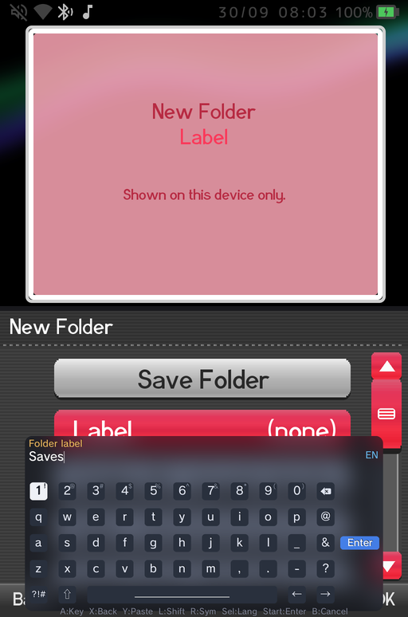
-
Minima dialogs page long text with L and R instead of cutting it off.
Game library
- Show Display Names. Games list and sort by their scraped or custom names by default instead of raw file names. See Game Systems.
-
Boxart Folder. Game Settings > Boxart Scraper > Boxart Folder moves scraped covers and backgrounds to the SD card (or any folder). Existing art is moved over and follows the card at boot and when you reinsert it. See Boxart.
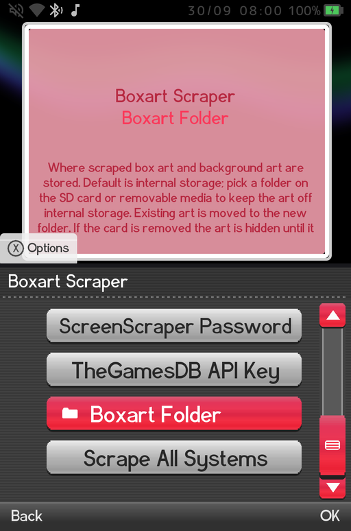
-
Clear Boxart per system. The Game Systems editor has a Clear Boxart action that deletes one system's downloaded covers and backgrounds.
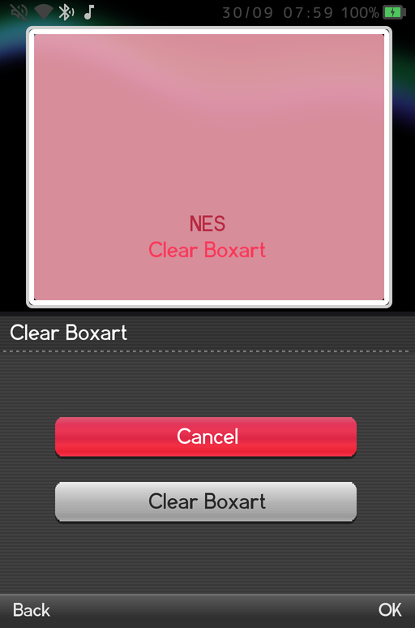
-
Your own PNG as a system icon. Press X in the Game Systems icon grid to import any PNG or JPG. See Custom Boxart for making your own art.
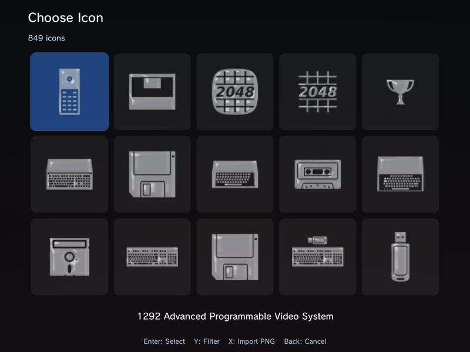
-
Manual system order sticks. Reorder systems with L1 / R1 in the editor and that is the order the home shows.
- Arcade systems stay separate. Adding CPS1, FBNeo or MAME no longer pulls in every other arcade folder, and a system with chosen scan folders scans only those.
- Arcade (Vertical). Folders named VERTICAL, VARCADE, TATE or TateGame are added automatically as their own Arcade (Vertical) system with the FBNeo and MAME players. See Adding Games.
- Search finds games in every system. Global search now considers every match and shows the best 250, so games in systems added last show up too. See Search.
- Back to the right system after a game, not the tile before it.
- Box art reloads live when the PC GammaOS Boxart Tool changes it, scraped names prefer the English title, and the screen stays on while scraping.
Apps and home
-
Quick Resume is now a choice, off by default. Turn it on in Settings > Game Settings > Quick Resume or from the Quick Menu. See Quick Resume.
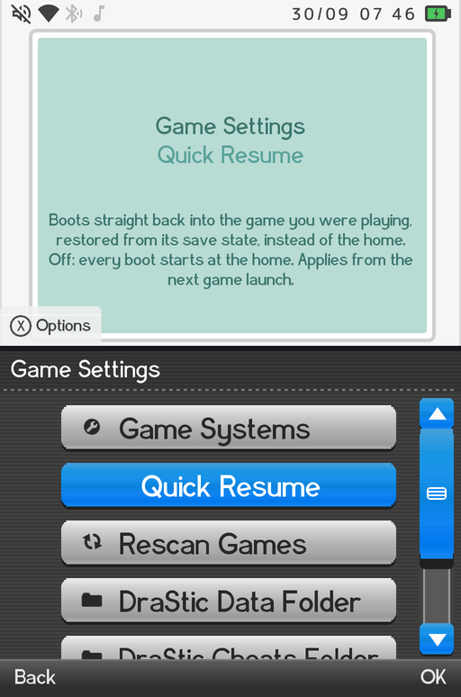
-
No more quick resume loop. Holding Back after a resumed DS game always brings the home back, and two resumed sessions in a row with no button press make the next boot land on the home.
- Home returns instantly after a DS game. The home stays resident during a DraStic Nano session and is back in a fraction of a second.
- Faster app launches on 1 GB devices. RetroArch opens in about 6 seconds instead of up to 22, and Mupen64Plus AE launches straight into the game.
- Lower idle CPU. The DSi, Minima and ES-DE homes stop redrawing when nothing moves.
- Mouse mode behaves. Switching mouse mode on or off no longer relaunches or crashes the app, and if an app quits while mouse mode is on, the home switches it off so the d-pad works again. See Gamepad Settings.
- Landscape-only apps on portrait devices such as PPSSPP and Flycast render upright and fill the panel.
- Install apps from file managers and stores without hunting for the per-app install toggle. See Applications.
- Device sleeps after the Android Screen Timeout you set, in the menu and on the boot intro.
-
System Information and System Update. Settings > System Settings > System Information shows the GammaOS version and edition, Android version, build date and more. System Update only checks when you ask and explains the result in plain words. See Settings Reference.
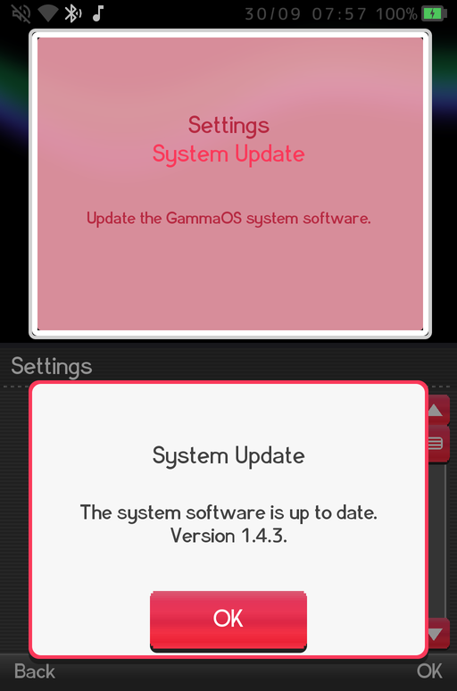
-
Video wallpapers on 1 GB devices refuse clips above 720p so a wallpaper cannot drain memory.
- Network category hidden on 1 GB devices. Turn it back on in Home Categories if you need it.
- Tidier Quick Settings. The unused Immersive Mode and Analog Calibration tiles are gone.
Media
See Media for the full player guide.
-
Embedded MKV subtitles. The video player finds SubRip and ASS/SSA tracks inside MKV files and renders styled ASS subtitles with their positions, sizes and colours.
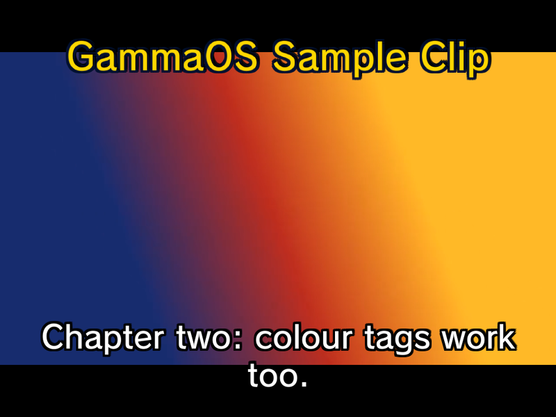
-
Chapter previews in Scene Search, pre-cached when a video opens.
-
Global Shaders from the video player. Pick Off, CRT, LCD3x, LCD, Blur Fill or a custom shader without leaving the video.
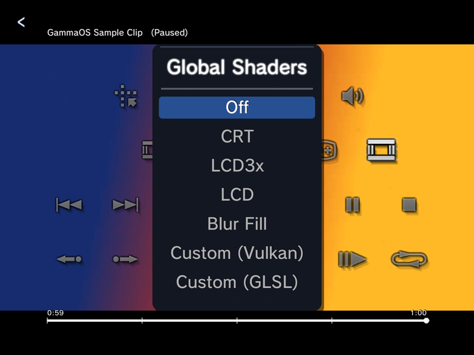
-
Large video files play reliably. Seeking, chapter jumps and audio track switches on big MKV files no longer crash or desync.
- Playlists everywhere. Add, remove and reorder tracks, videos and photos in Playlists from the Options menu in any theme.
- Headphone fixes. Menu sounds survive a headphone plug, the volume overlay follows the real level, and the boot chime plays from the first second on the RG DS Plus speaker.
DraStic Nano (DS emulation)
The full reference is on DraStic Nano, and the buttons on DraStic Controls.
- No DraStic APK needed. Everything DraStic Nano needs ships in the system image. Your saves live in
drastic-nanoon internal storage, with an offer to import old DraStic saves on first launch. -
GPU 3D renderer (experimental). The DS 3D scene can render on the GPU at hi-res, with DS-accurate blending, toon shading and shadows. In 1.4.3 its textures and shading match DraStic's own renderer on fine detail, and Mario and Luigi rooms render correctly.
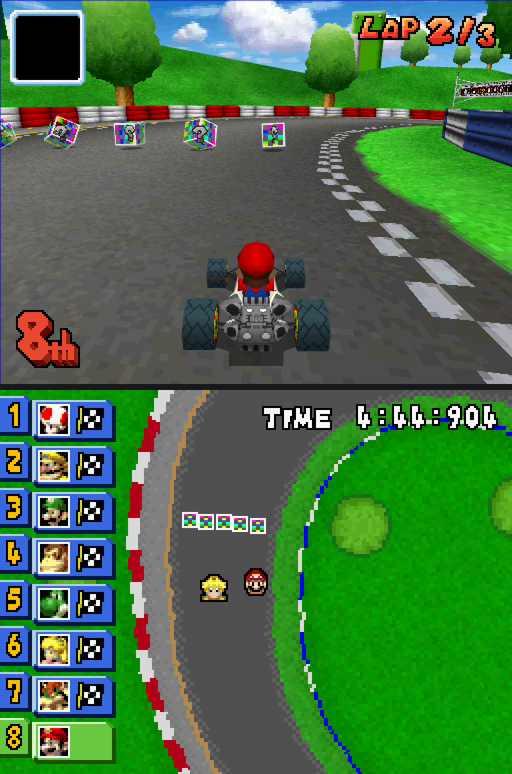
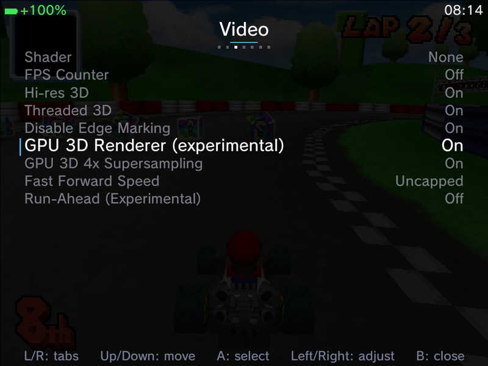
-
Low-latency audio. Game audio delay drops from roughly 300 ms to a few tens of milliseconds, and the clicks and pops in heavy scenes are gone. Golden Sun speech and echo-heavy games such as Yoshi's Island DS sound as they do on hardware.
- Low latency on headphones (RG DS Plus). From 1.4.3 the low-latency audio also reaches the headphone jack on the RG DS Plus, not just the speakers.
- Smoother frame pacing in heavy scenes, and a low-latency display path on the RG DS and RG DS Plus.
-
Two FPS counters. BLIT shows the present rate and GAME the real emulation rate.
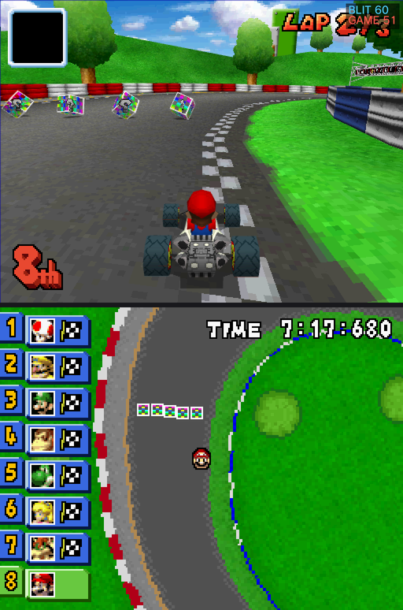
-
Fast Forward Speed. Cap fast-forward from 110% to 300% in steps of 10, or leave it Uncapped. Fast-forward is a press-to-toggle with an amber badge, and no longer corrupts or flickers.
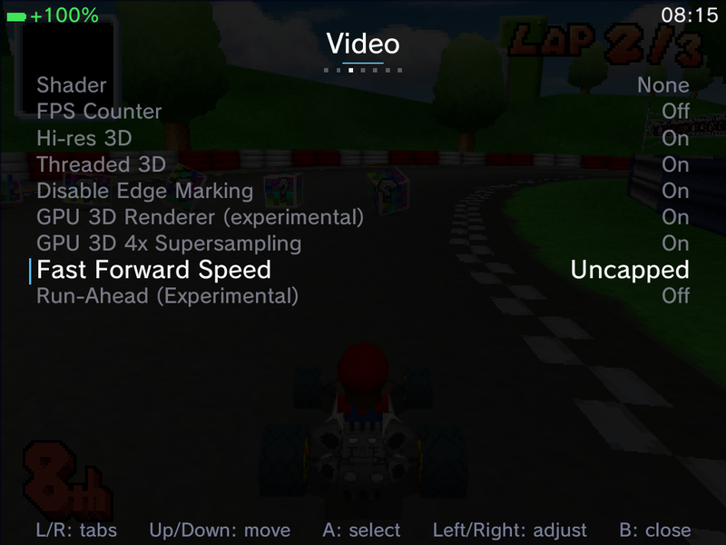
-
Run-Ahead (experimental). An optional one-frame run-ahead lets a press reach the screen sooner. It can now be on together with the GPU 3D renderer.
-
38 RetroArch LCD and CRT shaders in the Shader row, adapted to any screen size.
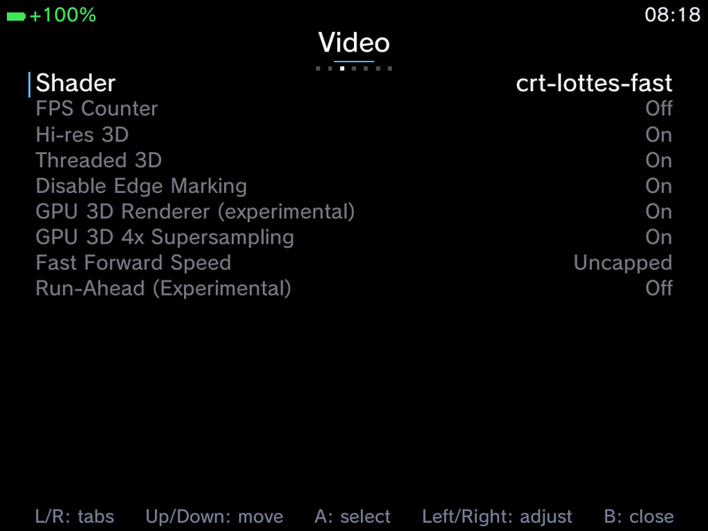
-
Per-game settings. Create Per-Game Override on the General page saves every setting for the current game, now including its Performance mode. Delete it and the global settings come back.
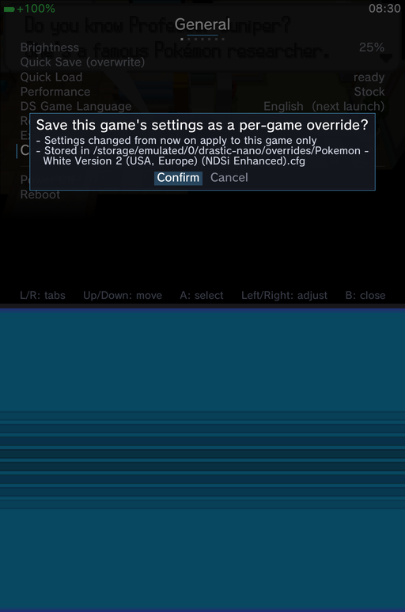
-
Undo Quick Save and Undo Quick Load, plus Quick Save and Quick Load right on the General page, and DS Game Language.
-
Save folders shown in the menu. The Save States page names the folders your saves and save states go to. DraStic Data Folder moves them anywhere, including the SD card or a network share.
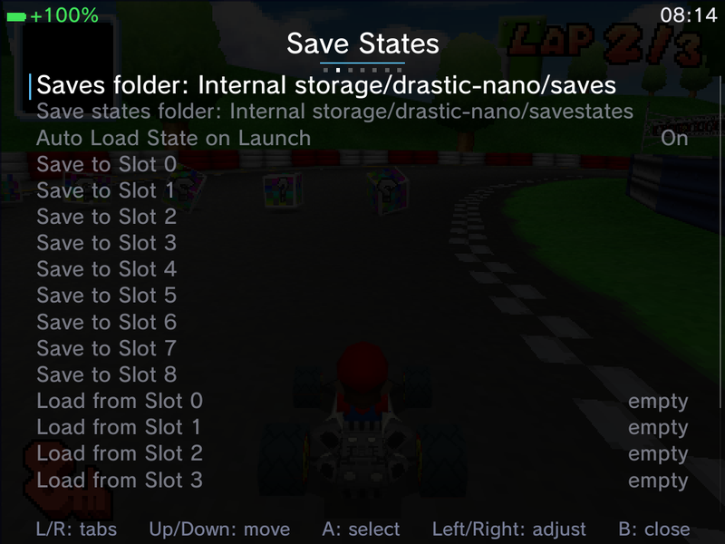
-
Your own cheat files. Drop R4 style
usrcheat.datfiles intodrastic-nano/cheats(or the folder picked in Game Settings > DraStic Cheats Folder) and they merge with the built-in cheats. The Cheats page can filter Built-in and Custom, and L2 / R2 page long lists.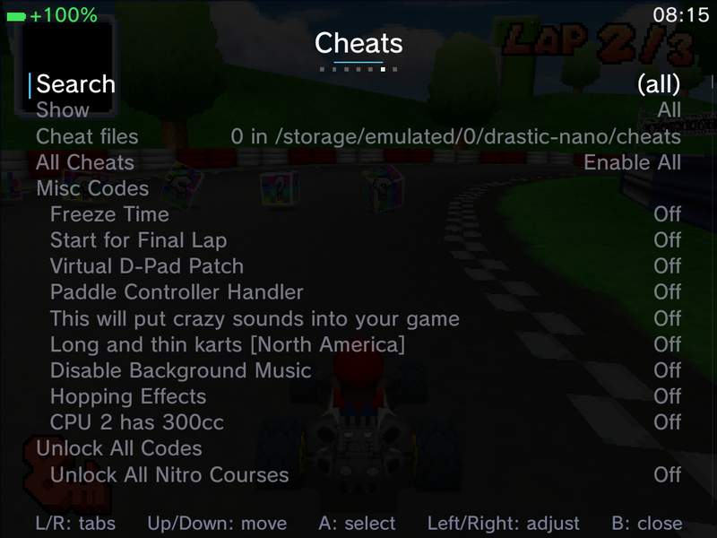
-
Close Lid button. A mappable Close Lid action toggles the DS hinge, and Physical Lid Closes DS Lid does it with the real lid.
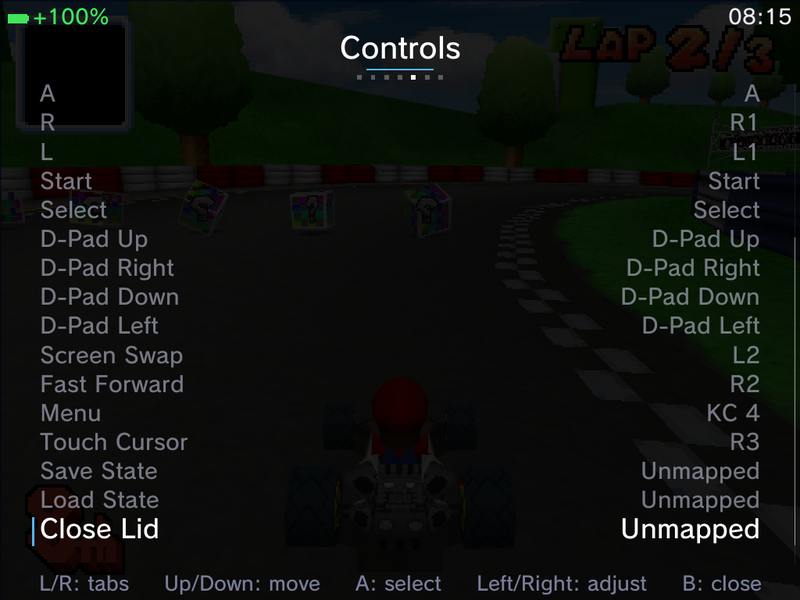
-
RetroAchievements toggles for the progress toast and challenge indicators.
- A snappier menu. The overlay opens without stalls, Power Off and Reboot ask for confirmation, every label is translated, the volume keys respond at once in heavy scenes, and a back-hold exit takes about 2 seconds with no screech.
- Zipped ROMs show a loading screen and keep their save states, and in-game brightness is remembered.
Dual-screen devices and the Control Center
-
Control Center. On the RG DS and RG DS Plus the bottom screen shows the Control Center while a single-screen game runs: brightness for each screen, quick tiles (Sleep Screen, Performance, Split Bright, Shader, Gamma EQ, Mouse, Screenshot, Wi-Fi), volume, temperatures and live CPU, GPU, power and RAM gauges. The CPU and GPU rings show the clock against the chip's top clock. See Control Center.
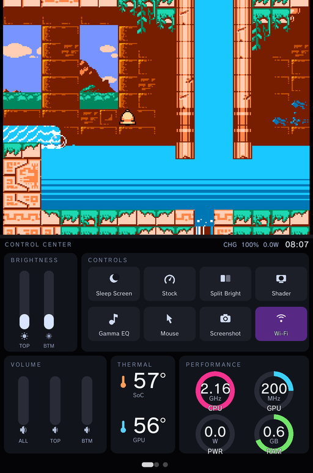
-
Screen options. Swipe to the third page for Double Tap to Wake and Screen Timeout for the bottom screen (also in GammaOS Toolbox).
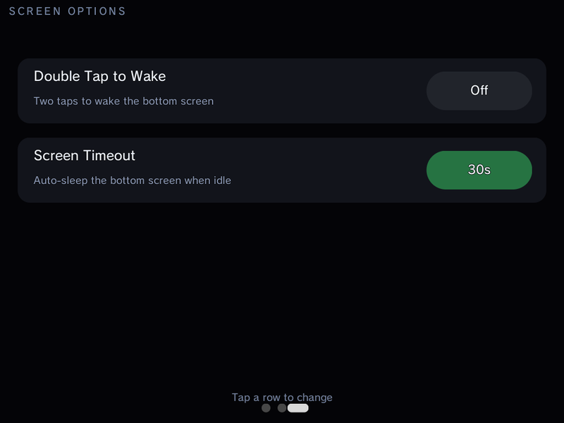
-
Mouse tile toggles GammaPad's virtual mouse with the pointer on the top screen, and brightness set on the Control Center slider is kept.
- Layout rows hidden in DraStic Nano on the RG DS and RG DS Plus, where each DS screen has its own panel.
Gamepad and navigation
- Faster list skipping. L1 / R1 page in XMB and L2 / R2 jump to the ends; in DSi and Minima the shoulder buttons jump by initial letter. See Navigating.
- Trigger to axis while keeping the button. GammaPad trigger-to-axis rules can send both the analog value and the original button.
-
Slide Launch Target picker. Choose the app (and activity) the slide opens from a list, and a Close App action force-stops it. See Slide and Rotation.
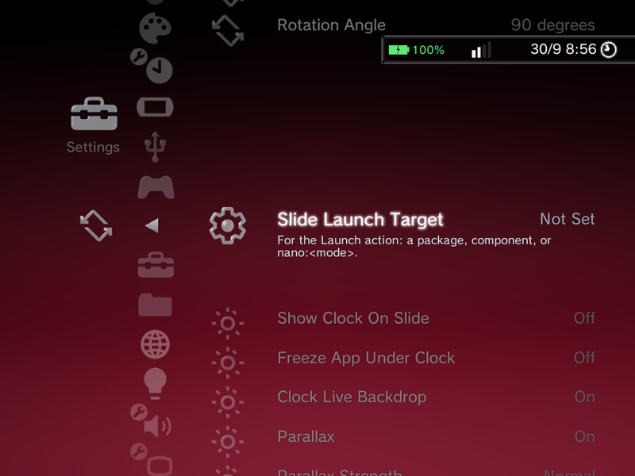
Network and Bluetooth
-
Syncthing built in. Sync saves and folders with your PC or phone from Settings > Network Shares > Syncthing: add folders and devices, accept pending requests and optionally open the web interface to your network. See Syncthing.
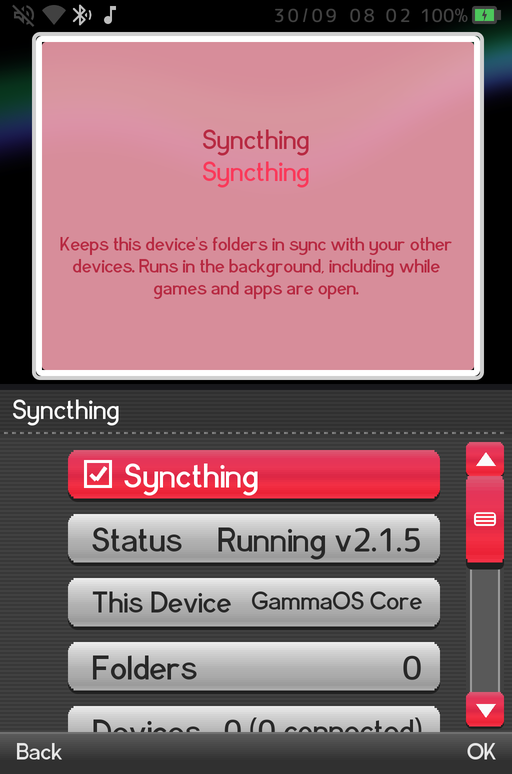
-
Bluetooth stays off. A fresh install starts with Bluetooth off, the setup wizard no longer has a Bluetooth step, and scanning no longer switches it back on. Turn it on from Bluetooth & Accessories or the Quick Menu. See Connectivity.
- Wi-Fi after sleep (RG DS Plus). Wi-Fi now comes back about two seconds after waking instead of looking connected but loading nothing, which also fixes scraping that failed after a sleep.
- SD card paths stay stable when a card is ejected or remounted, and the USB File Transfer switch really changes between MTP and charge only. See Network Shares for other ways to move files.
System and settings
- Setup wizard finishes by itself. After configuration it counts down and moves on. On the RG DS Plus it now runs at 60 fps with a progress bar, centred screens and your language applied before the Wi-Fi step. See Getting Started.
- Setup on battery (RG DS Plus). A freshly flashed RG DS Plus no longer switches itself off part way through setup when no charger is connected.
- Touch right after waking (RG DS Plus). The touchscreen answers the first tap after waking from deep sleep, instead of ignoring taps for up to ten seconds.
- Brightness remembered across boots, with no flashes while the system starts.
- First-boot setup on 1 GB devices no longer runs out of memory and retries failed app installs, and setup is faster overall.
- MTP transfers stay alive for the whole copy.
Full-Android and desktop mode
- Syncthing is also in Settings and TV Settings.
- Auto-granted permissions apply to frontends launched from a normal launcher and stick after store updates.
- Secondary-display home ships on the Lite and Full images.
- Sharper dual-stack apps on the RG DS and RG DS Plus, rendered at the panels' native 1024x1536.
Fixed
- Settings screens (Network and Internet, Security, VPN, Wi-Fi Direct, credentials, Printing) no longer crash in nano, and apps using the Android keystore no longer crash.
- The framework follows the panel's real refresh rate instead of compositing at 30 Hz on 61 Hz panels.
- Large scraped and media libraries no longer lose covers, names and playlists.
- The home no longer crashes shortly after start on the RG DS Plus, and no longer comes back flipped after a DS session.
- Navigation sounds no longer take all audio down on the RK3568 handhelds, and menu sounds play after the setup wizard.
- Holding Back in RetroArch returns to the home instead of restarting the app, and stock DraStic no longer launches on wake.
- DraStic Nano cheats work again, a leftover exit request no longer quits the next game, and a factory-reset first launch no longer shows red panels.
- Touch in DS games works after pressing the d-pad, and rotated panels use the home's touch calibration.
- Leaving the video player in DSi or Minima stops the video and its audio.
- The Control Center Screenshot tile captures the game, not the Control Center.
- Quick Resume boots no longer hang, normal boots chime, and a stale overlay flag no longer wedges the home.
- The secondary panel is fully released during the setup wizard on dual-screen devices.
- DSi dark theme edges and scroll bar, clock contrast, stale values and missing checkboxes are fixed, and Minima glyphs stay readable on light accents.
- An XMB page skip plays one cursor sound instead of a clipping burst.
- The Slide On Key Up and Down dialogs have OK and Cancel, so ticked actions save.
- The hidden source controller no longer shows up next to the virtual pad after boot.
- Releasing a capped fast-forward no longer leaves heavy 3D scenes crawling, and the GPU 3D renderer and 4x supersampling apply with Threaded 3D off.
- Syncthing folders can be picked again from the Path row, and the Web Interface option really opens it to your network.
Still stuck? The FAQ answers the most common questions about these releases.